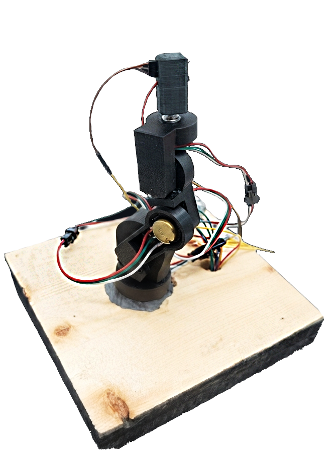

Overview
The arm stands about a meter tall and was designed as a complete assembly in Fusion 360, then refined on the bench as issues came up. Everything is 3D printed, including the planetary gearboxes, except for one metal 71:1 gearbox on the base joint, where the printed version skipped under the weight of the fully extended arm.
Getting the base to rotate under load took a custom solution: two matching semi-circular channels filled with 6 mm steel ball bearings carry the arm's weight into the base, so the gearbox only has to turn it rather than hold it up.
Keyboard control proved hard to use with five independent axes, so the arm is driven by a 1:5 scale physical twin with potentiometers in place of motors and a switch for the claw. Move the small arm, and the big arm follows.
The build


The system runs across two Arduinos and one Python app. The arm's Arduino drives the steppers with AccelStepper and the servos with ServoTimer2, parses position commands over serial, ramps motor speed smoothly, and reports live joint angles back every 100 ms. The controller's Arduino reads five potentiometers and the claw switch and streams them out over its own serial port.
The Python/tkinter app ties it together. It smooths the noisy potentiometer readings with a median filter and an exponential moving average, then drives the arm either in potentiometer mode, with rate-limited movement so the arm can't jump, or in a manual mode with press-and-hold buttons for fine positioning.
Test video
Next steps
Joint angles are currently estimated by counting stepper rotations through the gearbox ratio, so a skipped gear from a bump or collision can put the real and virtual angles out of sync. Rotary encoders on the gearbox outputs would let the system verify each joint's true position. The biggest issue, however, is the infil density of the base, which causes the entire arm to bounce when moving fully extended. The base flexes under heavy load, and any change in movement causes the entire arm to move much less predicatbly. Improving the density and strenght of the base, possibly with reinforcement plates or stiffer filament, is therefore the most prominent improvemnet for a future version
Skills and technologies
Source code, wiring diagrams, 3D models and full documentation are in the GitHub repository.